A Place Further than the Universe
A rewatch that hit harder than expected.
Quick Thoughts
Rewatching A Place Further than the Universe hit differently this time around. Back in high school, I already held it in high regard—it was one of those anime that quietly stood above the rest. But now, coming back to it with a bit more life experience, the story lands deeper, more personal.
What once felt like a heartfelt adventure now feels like a mirror. The themes of stepping out of your comfort zone, chasing something bigger than yourself, and the quiet fear of wasting your youth resonate in a way I didn’t fully grasp before. I find myself identifying with the characters more now, wishing I had paid closer attention to those messages the first time.
It’s still incredibly easy to binge—honestly, it might be even harder not to. The pacing, the emotional beats, and the chemistry between the cast make it flow effortlessly from episode to episode.
Some shows age well. This one evolves with you.
10/10 — still unforgettable, maybe even more so now.
Scenes & Thoughts
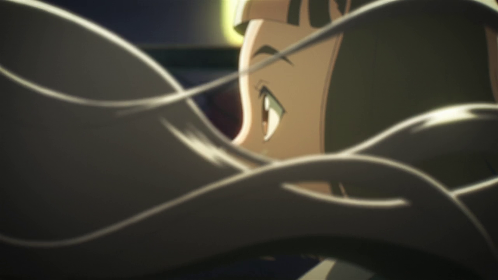

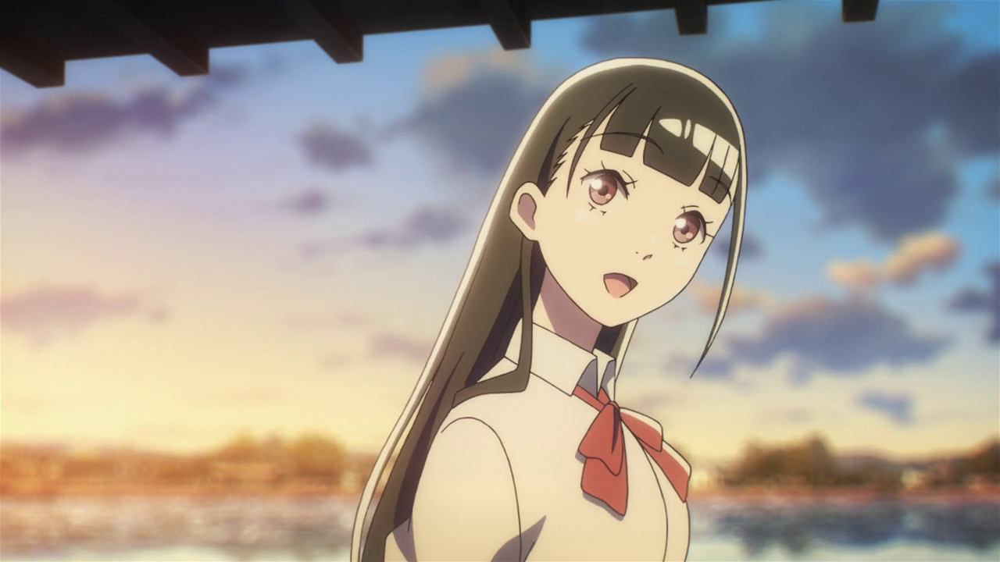
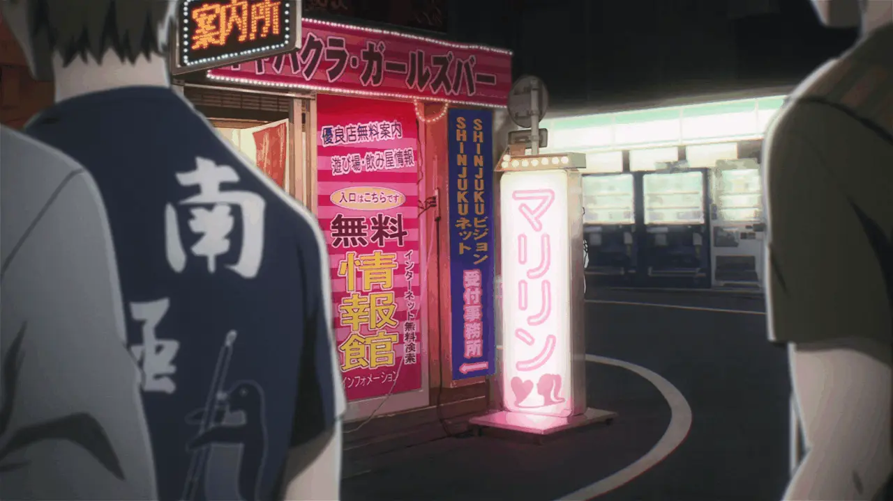
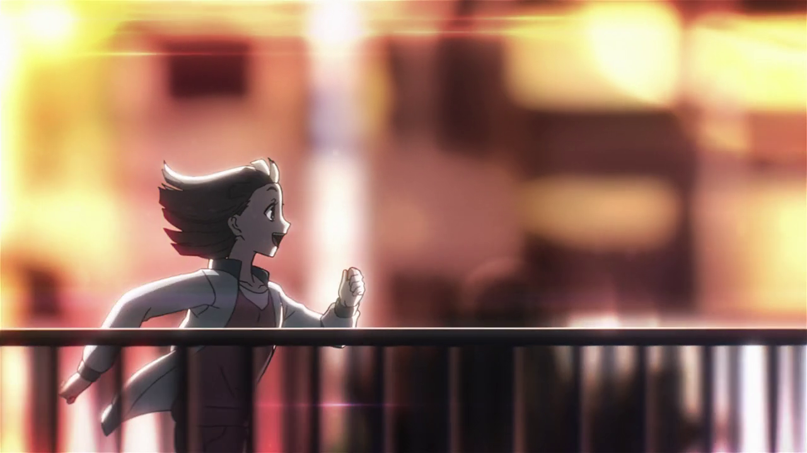
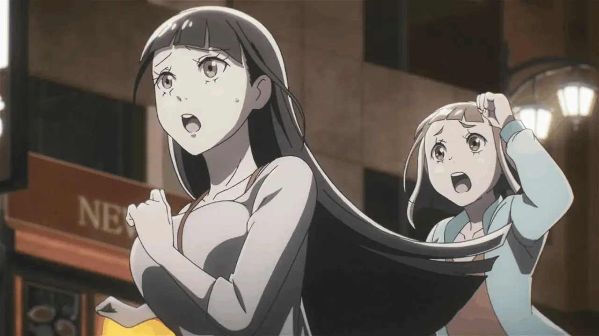


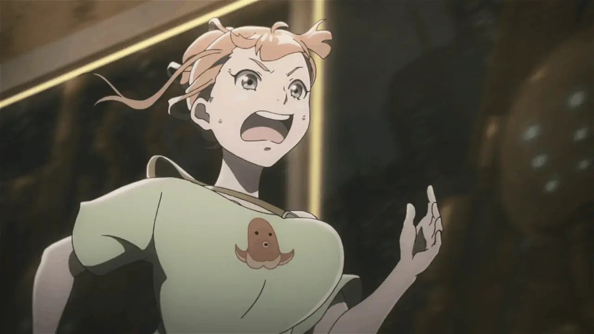
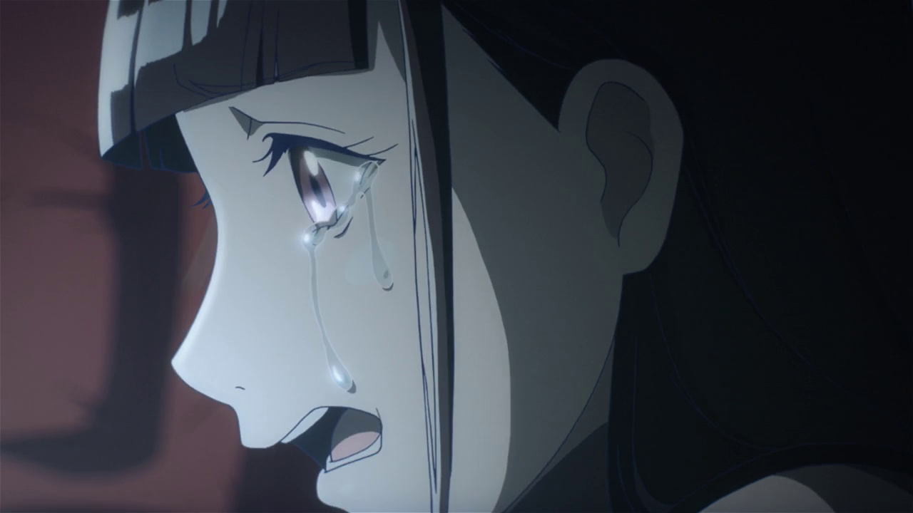
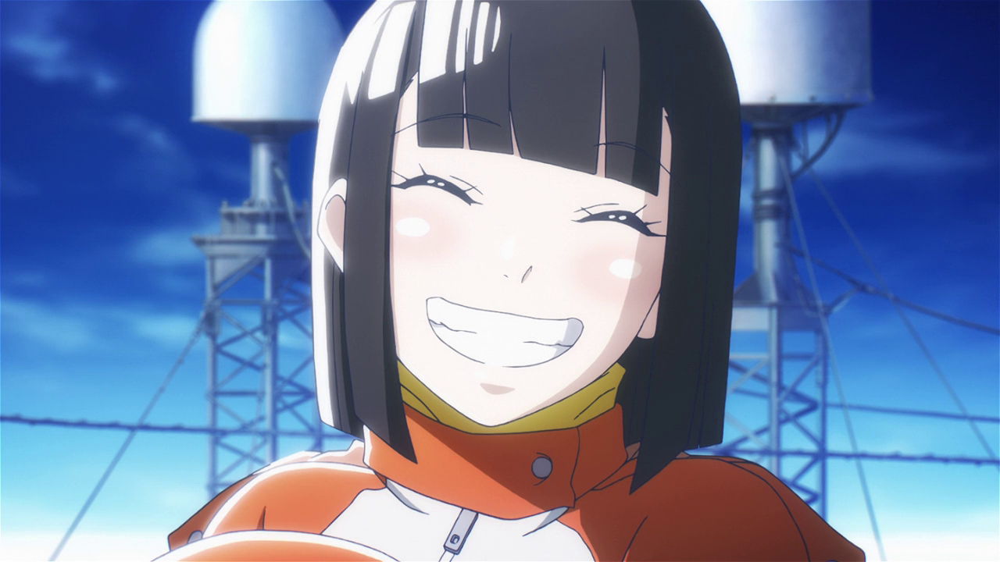
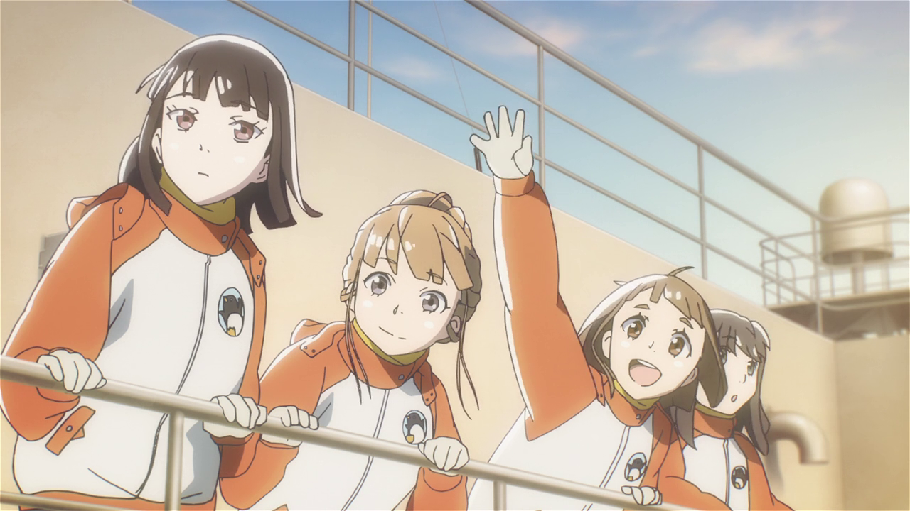
✔ What Worked
- Strong concept
- Genuinely funny character moments
- Great emotional peaks
✖ What Didn’t
- Inconsistent execution
- Pacing issues in key moments
- Missed deeper thematic potential
Character Verdicts
Character busts are ranked biggest to smallest, left to right

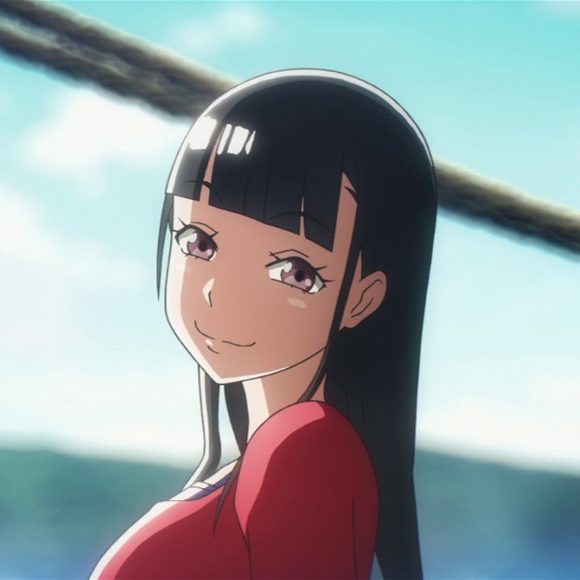
Shirase Kobuchizawa
Emotionally grounded and determined—her arc hits the hardest.
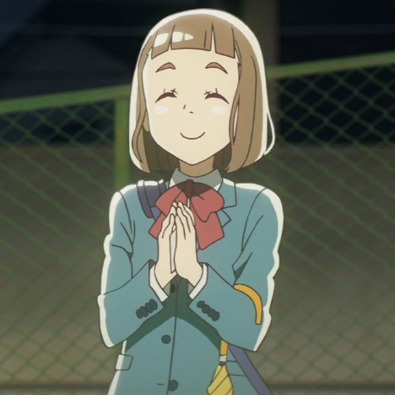
Kimari Tamaki
Relatable and driven, but more of a vessel for the journey than the standout.
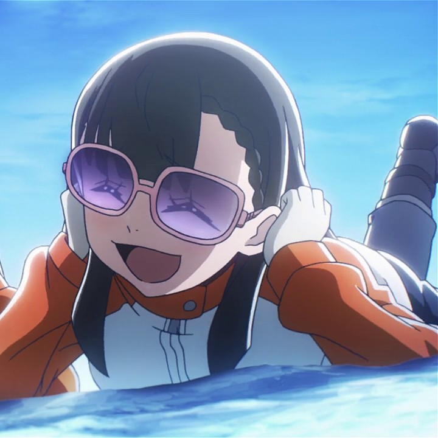
Yuzuki Shiraishi
Socially awkward but sincere—good growth, just not as impactful.